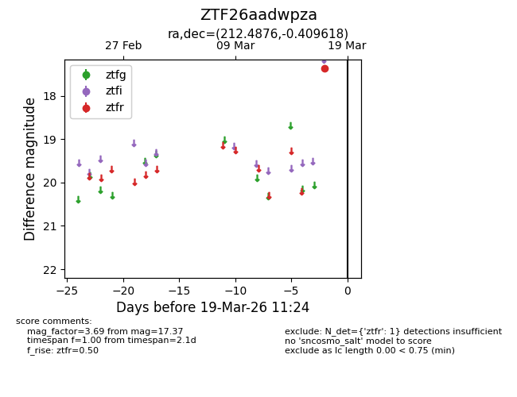
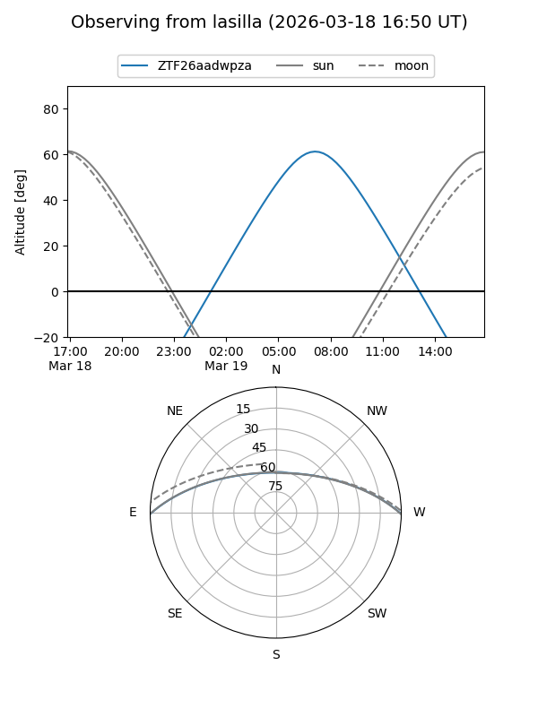
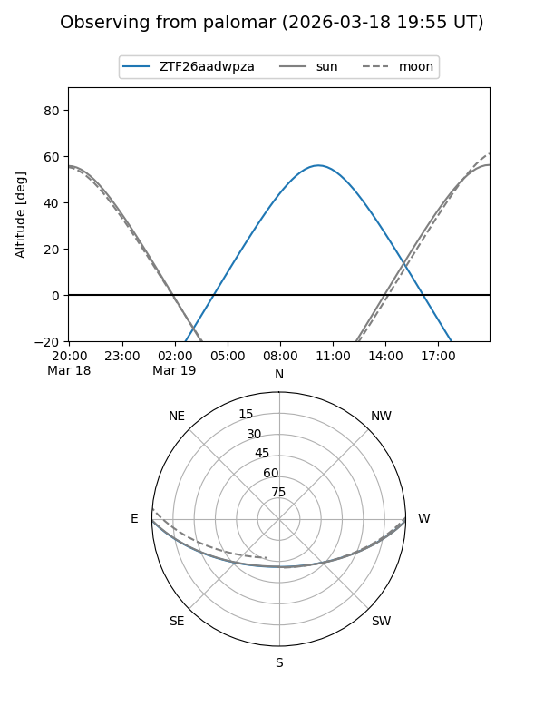

ZTF26aadwpza
Target ZTF26aadwpza at 2026-03-19 11:26
Aliases and brokers:
FINK: link
Lasair: link
ALeRCE: link
alt names
ZTF26aadwpza (ztf,fink_ztf)
Coordinates:
equatorial (ra, dec) = 212.4876,-0.40962
equatorial (HMS+DMS) = 14:09:57.02,-00:24:34.63
galactic (l, b) = (340.5537,+56.61501)
Flags:
Photometry:
last ztfr=17.37
1 ztfr detections
Lightcurve

Visibility


Additional plots